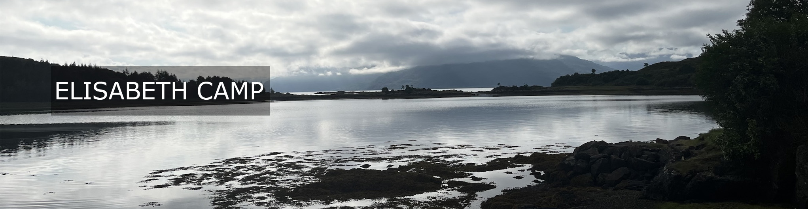
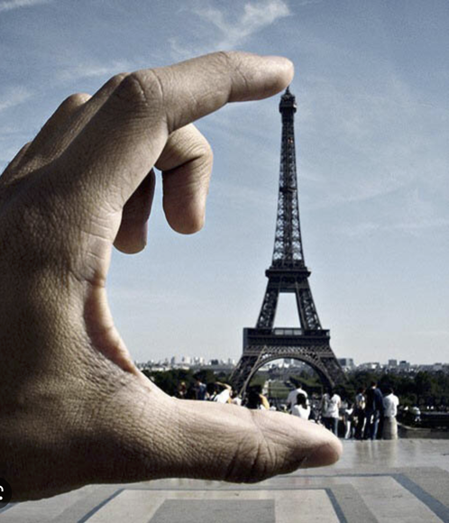

 |
I'm a philosopher of language, mind, and aesthetics gradually working my way into most other areas of philosophy. I am especially interested in forms of thought and talk that don't fit the standard philosophical model of mind and language. Much of my work can be divided into three increasingly overlapping strands. First, I am interested in perspectives: open-ended, intuitive dispositions to attend, explain, and respond to the world. Perspectives both enable and limit our ability to understand; perspectivally-inflected disagreements are especially difficult to resolve. We often use framing devices like memes and metaphors to coordinate perspectives. I've investigated the role of perspectives and frames in connection with metaphor, sarcasm, slurs, nicknames, social identity labels, science, fiction, and selves. Second, I am interested in conversation, specifically the interplay between conventionally encoded semantic meaning and use-driven modulations. I think that attending to ways that ordinary speakers use and respond to meaning that is not literal and explicit pushes us reconsider standard ways of distinguishing between semantics and pragmatics. I'm especially interested in conversations where interlocutors' interests are not fully aligned, power differentials are in play, and one or both parties is motivated to avoid conversational responsibility. Insinuation and jokes are especially interesting cases. Third, I am interested in concepts and representational formats. I take concepts to be systematically recombinable, stimulus-independent representational abilities. Some human thought is conceptual in this sense; but so is the cognition of at least some non-human animals. Many theorists have wanted to explain these features by anchoring thought in language; I have argued that they can also be implemented using maps. More generally, I aim to identify how different representational systems exhibit different profiles of expressive and implementational strengths and weaknesses, and the implications for investigating minds and brains. |